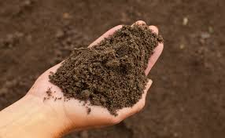

Matglad Magi
Gigantiska köttbullar (Drake edition)

ingredienser
- 3 dl jord (verklig jord från en säker och ren källa som är ätbar och säker för konsumtion, exempelvis steriliserad kakaopulver och malt kexblandning)
- 2 ägg
- 3 dl socker
- 2 dl vetemjöl
- 1 tsk vaniljsocker
- 1/2 tsk salt
- 150 g smör, smält
- 2 dl kakao (för att efterlikna jorden och ge en djup chokladsmak)
- 1 tsk bakpulver
instruktioner
- Förvärm ugnen till 175°C och smörj en springform (ca 24 cm i diameter) med smör eller lägg bakplåtspapper i botten.
- I en stor skål, vispa ägg och socker tills blandningen är lätt och fluffig.
- I en annan skål, blanda vetemjöl, kakao, vaniljsocker, salt och bakpulver. Detta är din "jord"-blandning.
- Tillsätt den smälta smöret till ägg- och sockerblandningen och rör om tills allt är väl blandat.
- Tillsätt sedan "jord"-blandningen till den våta blandningen och rör om tills smeten är jämn och utan klumpar.
- Häll smeten i den förberedda formen och jämna ut ytan med en spatel.
- Grädda i mitten av ugnen i cirka 20-25 minuter. Kakan ska vara kladdig i mitten men ha stelnat på kanterna.
- Låt kladdkakan svalna i formen innan du tar ut den.
- Servering:
Servera kladdkakan som den är eller med en klick vispgrädde, en skopa vaniljglass eller färska bär för en extra lyxig touch.
×
Login page does currently not work, because idk webbserverdevelopment bs